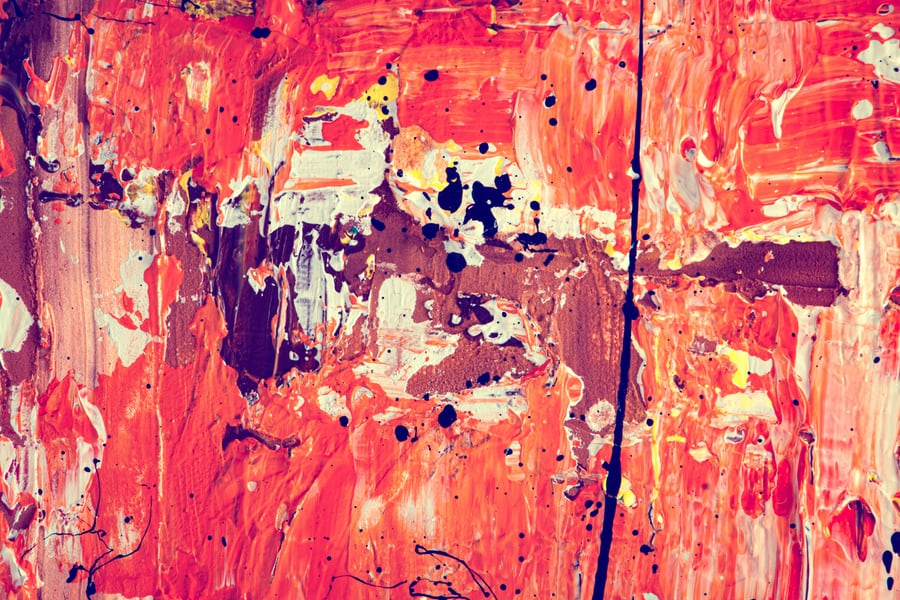
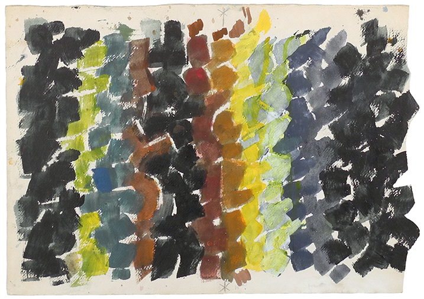
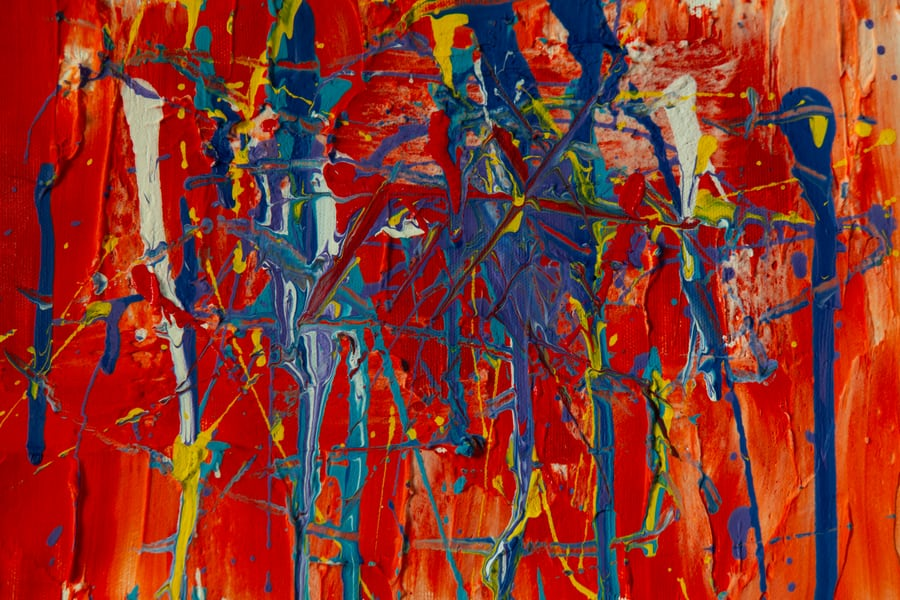
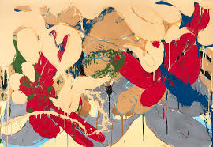

The Velvet Velvet periodically changes the displays of work from our collection of 24,000 objects. You can support the entire collection or choose a particular area, such as American art, African art, decorative arts, or contemporary art.
Special exhibitions bring the art of the world to Seattle, and often offer relevant and timely perspectives. Your contribution provides much-needed funds for these ambitious and innovative undertakings, including research, gallery design, installation, and educational materials.
In the late 1960's, the first Washington Color School artists adopted the technique of staining rough, unprepared, unsized canvas with thinned acrylic paint, allowing them to experiment with new possibilities for perceiving color, and shaking up the rules of painting itself. By thinning paint and using new techniques of application, the paint soaked into the unprimed canvas allowing for experimentation for artists like Paul Reed, who overlapped and layered color in his compositions, Gene Davis and Howard Mehring, known for their hard edge painting, achieving fluid yet defined forms of vibrant, solid color. Cynthia Bickley and Kenneth Young continued the early WashingtonColorSchool practices, but updated them with their own philosophies and motifs.
Closed in March 2020, "Abstraction: Women Represent", featured a selection of paintings, sculptures and works on paper by notable female artists from the last century. From Louise Nevelson and Irene Rice Pereira to Elizabeth Murray, Mimi Herbert, and Nancy Graves, the show looks at how a generation of women perceive their environment and represent their shared experiences on canvas, through shape and in form. These artists relate their extraordinary perspectives on the natural world. We invite you to explore what unites these works and the women who created them.
The Velvet Velvet Art Gallery presents "The Art of Color," an exhibition celebrating the use of color as subject in abstract art. Featuring paintings, sculpture, works on paper, and mixed media, this exhibition explores how contemporary artists experiment with geometry, form, and pattern to create color compositions that are powerfully expressive. Colors burst, fracture, and boldly call our attention, inviting us to engage. Lively and dynamic, these works offer viewers an opportunity to immerse themselves in the experience of color.
Bethesda Fine Art presents Exploring Abstraction, a selection of paintings and works on paper by more than a dozen artists that range from the carefully controlled color field "orbs" of Kenneth Victor Young to an important oil on canvas by Norman Bluhm (1959). Bluhm's tightly framed triptych features bold brushstrokes accented by drips in multiple layers. A large work by Michael Goldberg is an excellent example of his combination of thick areas of impasto and elegant flowing lines on layers of canvas.
A recent work (2010) by Sam Gilliam also involves collaged pieces of painted material. The heavy, durable paper is then die cut in some places and stitched together with thread in others. The show also includes distinguished works by Robert Goodnough, Howard Hodgkin, Andre Lanskoy, Kyle Morris, Robert Rauschenburg, Rolph Scarlett, Theodoros Stamos, and Rudolph Weisenborn. Thoughtfully exhibited together with balance of scale, color, and visual resonance, these works offer viewers an exceptional eight-decade tour of abstract art.
